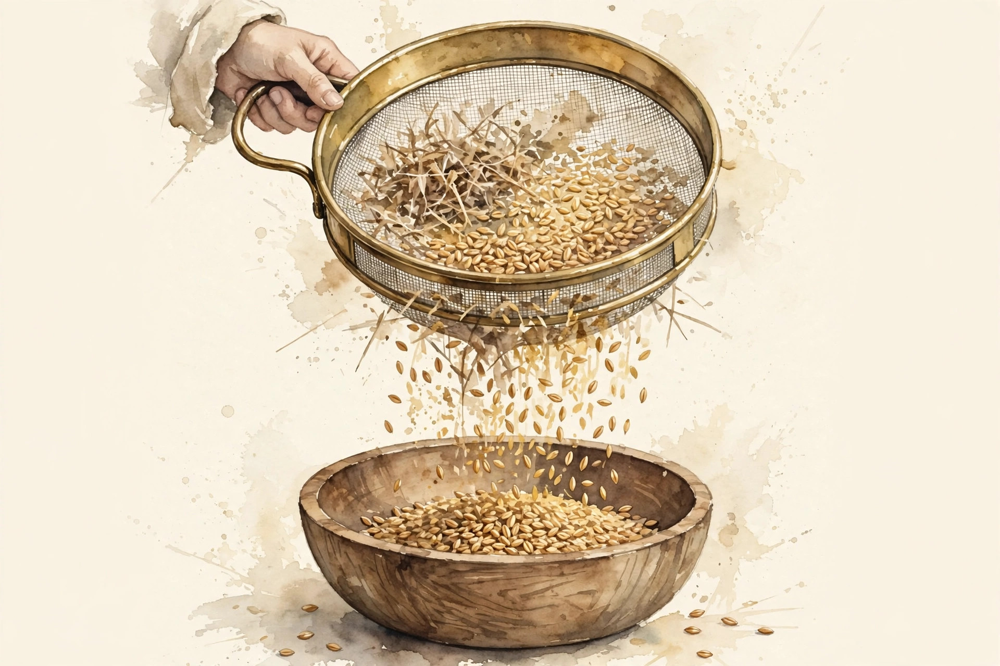
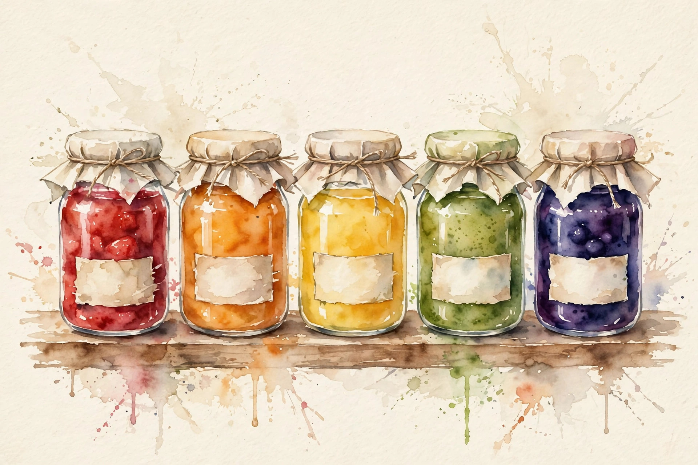

Companion · narrated from the lesson document
The crawl is not the corpus. This companion walks the data sourcing unit: crawl structure, HTML extraction, PDFs and code and books, provenance and licenses, encoding and language detection, document boundaries, privacy redaction, domain balance, token statistics, corrupted records, deterministic pipelines, and dataset versioning.
From the lesson The idea, and every number beside it, comes from the cited section of u13_data_sourcing.md. The phrasing is the companion's.
Illustration Invented by the companion: an analogy, a toy with made-up values, or a what-if. Never lecture content.
companion Companion voice: the idea above the tag is from the lesson. The generalization below it is the companion's.
Provenance: no full lecture transcript exists for this session. The page narrates the lesson document content/v2/cs336/lessons/u13_data_sourcing.md, not a video. Claim class: REQUESTED-BRANCH. Standing note: no web crawl was performed on the lesson's build box. Every corpus below is a synthetic toy from visuals/compute_u13.py, executed 2026-10-06. Every number carries the lesson section that reports it.

Section 1 · Remediation
From the lessonRemediation
A crawl arrives as bytes. Bytes decode to text (encoding detection), text splits into documents (boundaries), documents carry metadata (provenance). The lesson's toy from compute_u13.py: 200,000 synthetic pages, 6.6 GB raw, 1.9 GB kept text. Yield 28.6 percent, median 4.9 KB per page. Most of the web is boilerplate. This pipeline, bytes to documents, is the spine of the unit: every later section is one of its stages made rigorous.
From the lessonRemediation, C09 §5 Yield toy. Kept GB = raw × yield. Tokens ≈ kept bytes / 4.20.
Raw (GB) Yield
Press the button.
At the defaults: 1.89 GB kept, about 450M tokens, matching the remediation and C09 §6.
Most of the web is boilerplate. 6.6 GB raw becomes 1.9 GB kept: 28.6 percent.
Section 2 · C01, C02
From the lessonC01 §2, §6
What does "the crawl" actually look like on disk? A monthly crawl is a set of WARC files: each record holds a URL, a timestamp, HTTP headers, and the raw response bytes. Records are length-prefixed blocks. An index (CDX) maps URLs to byte offsets. The crawl is a frozen slice of the web: petabytes of responses with metadata. You never train on it raw. You extract, filter, and dedup (U14) first. The lesson's toy: 200,000 records, 6.6 GB raw. Real crawls are petabytes: the first cost is storage and the second is the extraction compute. The failure case: records with truncated bodies (toy: 3.07 percent) parse as short documents and pollute statistics. The assumption "records are complete" breaks. Validate content-length.
From the lessonC02 §2, §5, §6
A page is 33 KB of HTML, the article is 5 KB. Where did the rest go? HTML is a tree. The article is a subtree. The rest is navigation, ads, scripts, styles. Extraction keeps the text-bearing subtree and drops the chrome. Parse to a DOM, score blocks by text-to-tag ratio, keep the winners, strip remaining tags. Heuristics, not a theorem. The lesson's run, executed 2026-10-06: 6.6 GB raw to 1.9 GB kept, yield 28.6 percent, median kept text 4.9 KB per page. Aggressive extraction drops tables and lists. Gentle extraction keeps boilerplate. The dial is per-domain. The failure case: JavaScript-rendered pages. The raw HTML holds no article text. The assumption "the HTML contains the content" breaks. Render or skip.
visuals/compute_u13.py (executed 2026-10-06).You never train on the crawl raw. Extract, filter, dedup first.
Section 3 · C03
From the lessonC03 §2, §5, §6
Books and papers hold the densest text. What breaks when you ingest them? Each format is a layout problem. PDF: text boxes in xy order, not reading order. Sort boxes by column, then line. Code: the repo is the document, files are the paragraphs. Keep paths as metadata, dedup by content hash. Books: chapters are the documents. Split on chapter markers. The lesson's lab: a two-column PDF page with 40 text boxes. Naive xy sort interleaves the columns. Column-aware sort recovers the order. Worked by hand in the lab. Layout analysis costs compute per page. Bad OCR on scanned PDFs costs quality silently. The failure case: scanned PDFs with no text layer. The extractor returns empty. The assumption "PDFs contain text" breaks. OCR or drop.
Section 4 · C04, C07
From the lessonC04 §2, §5, §6
A document trains the model, then its owner objects. Can you find and remove it? Only with provenance: source URL, crawl date, license tag stored per document. Every document carries a passport: where it was found, when, under what license. No passport, no train. Takedown is a database query, not an archaeology project. License classes: public domain, permissive, viral copyleft, unknown. Unknown is treated as unusable. The lesson's toy: 1000 documents, 700 permissive, 200 unknown, 100 copyleft. Trainable set: 700. The policy decision is arithmetic once the tags exist. License detection is heuristic (headers, robots, terms pages). Heuristics err. The policy needs a review queue. The failure case: the license tag is scraped from a template footer that lies. The document is actually all-rights-reserved. The assumption "tags are true" breaks. Sample and audit.
From the lessonC07 §2, §5, §6
The crawl contains phone numbers and emails. What do you do? Detect patterns (regex plus classifiers) and replace with placeholders. The guarantee is best-effort, never total. Redaction is a filter with two error types: missed PII (privacy failure) and over-redaction (data damage). Tune for recall on the dangerous classes. The pipeline: detect, verify against an allowlist (public figures, example domains), replace with typed tokens. The lesson's toy: 10,000 documents, detector finds 320 phone-like strings, 300 true, 20 false. Precision 0.94, recall unknown without labels: the honest report. Over-redaction removes useful numeric data. Under-redaction is a privacy incident. The dial favors recall. The failure case: indirect identifiers (rare name plus town plus employer) evade every pattern. The assumption "PII matches patterns" breaks. K-anonymity thinking is needed for quasi-identifiers.
visuals/compute_u13.py (executed 2026-10-06).No passport, no train. Takedown is a database query, not an archaeology project.
Tune redaction for recall on the dangerous classes. Precision 0.94, recall unknown without labels.
Section 5 · C05, C06
From the lessonC05 §2, §5, §6
The corpus must be 90 percent English. How do you check? Detection is n-gram statistics against language profiles. Short texts are hard, mixed texts are harder. The dangerous error is contamination of the majority class, hence the false-positive metric. Character n-gram profiles per language. The text's profile is compared by distance. Encoding detection (chardet-style) runs first: wrong encoding means wrong n-grams. The lesson's run on a synthetic 4-language classifier, executed 2026-10-06: accuracy 0.952, the rate at which non-English is called English 0.015. Detection costs CPU per document and mislabels dialects and code-switched text systematically. The failure case: a document with 50 English boilerplate lines and 10 lines of Hindi poetry. Labeled English, mostly Hindi content. The assumption "one document, one language" breaks. Detect per segment.
From the lessonC06 §2, §5, §6
The crawl gives pages, training wants documents. Is a page a document? Often yes for articles, no for index pages that concatenate 50 unrelated blurbs. The boundary decides what the model learns as "one context". Packing (U15-C08) later concatenates documents, and attention must not cross the boundary. Wrong boundaries teach spurious long-range links. Rules: article pages stay whole, index pages split on item markup, books split on chapters (C03). The lesson's toy: an index page with 50 blurbs of 30 tokens each. As one document: 1500 tokens of unrelated text. Split: 50 clean documents. The training signal differs completely. Splitting too aggressively fragments real long documents and shortens the effective context. The failure case: infinite-scroll pages with no item markup. The splitter finds nothing and the page stays a soup. The assumption "markup marks items" breaks. Fall back to length caps.
Section 6 · C08, C09
From the lessonC08 §2, §5, §6
The crawl is 60 percent generic web. Should training see 60 percent web? The mixture is a prior over what the model should be good at. Upweighting code buys code capability at the price of general text. There is no neutral mixture. Sampling probability per document = target weight / source weight, normalized. Documents from upweighted domains repeat more often. The lesson's run, executed 2026-10-06: source web 0.60, books 0.10, code 0.15, papers 0.05, wiki 0.10, reweighted to 0.40, 0.15, 0.25, 0.10, 0.10. Code rises 1.67x, papers 2.00x. Full multipliers: 0.67, 1.50, 1.67, 2.00, 1.00. Upweighting past the available data repeats documents (U14-C12 memorization tradeoff). The failure case: the target overweights a domain with 1 percent of the corpus. Every document repeats 100x and the model memorizes it. The assumption "enough unique data" breaks. Cap the repeat factor.
From the lessonC09 §2, §5, §6
The corpus is 1.9 GB of text. How many tokens? Bytes per token (fertility inverted) is the exchange rate between storage and training. It varies by domain and tokenizer. Measure it, do not assume 4. Tokens = bytes / (bytes per token). The rate comes from tokenizing a sample, not from a constant. The lesson's run, executed 2026-10-06: at 4.20 bytes per token, 1.9 GB is about 450M tokens. At 3.60, about 530M. Tokenizing the full corpus to count exactly costs a full pass. Sampling is enough for planning. The failure case: code tokenizes at 2.5 bytes per token. The 4.0 assumption undercounts code tokens by 37 percent. The assumption "one rate fits all" breaks. Measure per domain.
visuals/compute_u13.py (executed 2026-10-06).From the lessonC08 §5 Reweight toy. Multiplier = target weight / source weight.
Source weight Target weight
Press the button.
At the defaults: 0.25/0.15 = 1.67x for code, matching C08 §6.
There is no neutral mixture. Upweighting code 1.67x buys code capability at the price of general text.
Measure bytes per token, do not assume 4. Code at 2.5 breaks the assumption by 37 percent.
Section 7 · C10
From the lessonC10 §2, §5, §6
6 percent of records are broken. Drop, fix, or keep? Three classes, three policies: truncated goes to drop or keep-with-flag, bad encoding goes to re-decode or drop, empty goes to drop. Silent keeping is the failure mode. Each class gets a detector and a policy, logged per record. The lesson's run on 50,000 synthetic records, executed 2026-10-06: truncated 3.07 percent, bad encoding 2.02 percent, empty 0.97 percent. Dropping 6 percent of a petabyte crawl is 60 TB of lost text. Keeping it is noise in training. The failure case: truncation correlates with long documents. Dropping them biases the corpus short. The assumption "corruption is random" breaks. Check the length distribution of drops.
visuals/compute_u13.py (executed 2026-10-06).Silent keeping is the failure mode. Every broken record gets a detector, a policy, and a log line.
Section 8 · C11
From the lessonC11 §2, §5, §6
Rerun the pipeline next month. Same dataset? The pipeline is a function: f(code version, config, inputs) = dataset. Sort before hashing, seed every RNG, pin every dependency. The hash is the proof. Sorting makes the hash invariant to input order. Seeded RNGs make sampling reproducible. Together they make reruns identical. The lesson's run, executed 2026-10-06: 1000 documents hashed in sorted id order give version id 613575a7e17d78eb. Reversing the input order gives the same hash. Order-independent, deterministic. Sorting a petabyte-scale shuffle costs a full distributed sort. Determinism is not free at scale. The failure case: a nondeterministic library (parallel hash map iteration) leaks into the order. The hash flips between runs. The assumption "the code is deterministic" breaks. Audit the dependencies.
Section 9 · C12
From the lessonC12 §2, §5, §6
Model v3 was trained on data v7. Which documents were those? The version manifest answers: code hash, config hash, input hashes, output id. Versions are immutable snapshots with manifests. Models point at versions, never at "latest". "Latest" is a moving target that destroys reproducibility. Major version for content changes, minor for code-only reruns that reproduce the same id. The lesson's toy manifest: code abc123, config def456, inputs (3 hashes), output 613575a7e17d78eb. Storing every version costs storage. Storing only manifests plus reproducible pipelines costs reruns. The failure case: a hotfix edits the dataset in place without a new version. Two models claim the same version with different data. The assumption "versions are immutable" breaks. Forbid in-place edits.

Models point at versions, never at "latest". The manifest names one exact dataset: 613575a7e17d78eb.
Section 10 · Synthesis
From the lesson The arc, end to end. Bytes decode to text, text splits into documents, documents carry provenance (remediation). The crawl is a frozen slice of the web, never trained on raw (C01). Extraction keeps the text-bearing subtree at 28.6 percent yield (C02). PDFs, code, and books are layout problems (C03). Every document carries a passport. Redaction tunes for recall (C04, C07). Language detection guards the majority class. Boundaries decide what "one context" means (C05, C06). The mixture is a prior with no neutral value. Bytes per token is measured per domain (C08, C09). Broken records get detectors, policies, and log lines (C10). The pipeline is a pure function of its inputs (C11). Versions are immutable. Models point at versions (C12).
From the lesson Where the unit points next, in the lesson's own forward links: U14 takes the extracted corpus through filtering, dedup, and learned mixtures. U01 supplies the tokenizer behind the bytes-per-token rate. U15 supplies the packing that must respect document boundaries.
Wisdom index
Each nugget states the idea in plain words, why it matters, and the transferable principle. Every one is anchored to its lesson section.